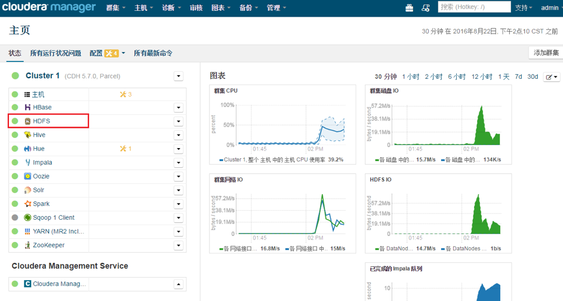
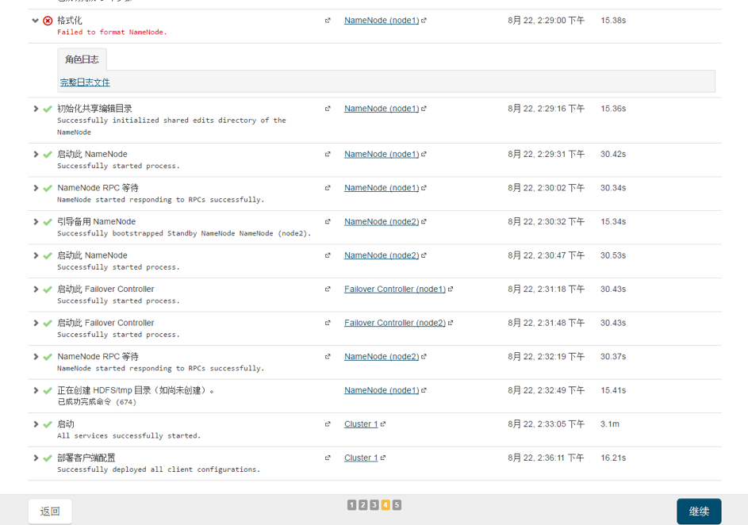

官方文档：https://docs.cloudera.com/documentation/enterprise/6/6.3/topics/installation.html
安装前准备
设置hostname
每个主机的规范名称 / etc / hosts文件 必须是FQDN（例如myhost-1.example.com），而不是不合格的主机名（例如 为myhost-1）。确保hostname一致。1
2
3
4
5
6
7
8
9
10[root@node01 ~]# cat /etc/hosts
127.0.0.1 localhost
::1 localhost
172.18.21.61 node01.bigdata.hex.com node01
172.18.21.62 node02.bigdata.hex.com node02
172.18.21.63 node03.bigdata.hex.com node03
[root@node01 ~]# hostname
node01.bigdata.hex.com
禁用防火墙和selinux
1 | systemctl list-unit-files |grep fire # 查看防火墙开机启动状态 |
启用NTP
CDH要求您在群集中的每台计算机上配置网络时间协议（NTP）服务。要启动NTP并将其配置为在重新引导时自动运行，请在群集中的每个节点上执行以下步骤。1
2
3
4
5
6
7
8
9
10
11
12
13
14
15
16
17
18
19
20
21
22
23
24
25
26yum install ntp
# 编辑/etc/ntp.conf文件以添加NTP服务器
restrict 172.18.0.0 mask 255.255.240.0 nomodify notrap
# 中国这边最活跃的时间服务器 : http://www.pool.ntp.org/zone/cn
server 210.72.145.44 perfer # 中国国家受时中心
server 202.112.10.36 # 1.cn.pool.ntp.org
server 59.124.196.83 # 0.asia.pool.ntp.org
server 127.127.1.0 iburst
fudge 127.127.1.0 stratum 10
# 其他节点上编辑/etc/ntp.conf文件以添加NTP服务器
server 172.18.21.61
# 启动服务：
systemctl start ntpd
# 配置开机启动：
systemctl enable ntpd
# 主节点手动同步网络时间：
ntpdate -u 210.72.145.44 # 中国国家受时中心
# 其他节点手动同步主节点：
ntpdate -u 172.18.21.61 #主节点IP
# 同步系统时钟（以防止同步问题）：
hwclock --systohc
关闭透明大页面
1 | echo never > /sys/kernel/mm/transparent_hugepage/defrag |
安装Cloudera Manager和CDH
配置本地yum库
下载CM的repo资源
https://archive.cloudera.com/cm6/6.3.1/redhat7/yum/RPMS/x86_64/
下载到http服务的文件夹/var/www/html/cloudera/CM/6.3.1/下
下载CDH的parcels资源
下载对应系统的资源到/var/www/html/cloudera/CDH/下
配置yum资源
Cloudera Manager资源的yum配置文件：1
2
3
4
5vi /etc/yum.repos.d/cloudera-manager.repo
[cloudera-manager]
name = Cloudera Manager, Version 6.3.1
baseurl = http://172.18.21.61/cloudera/CM/6.3.1/
gpgcheck = 0
Linux OS资源的yum配置文件：1
2
3
4
5
6vi /etc/yum.repos.d/ linux-os.repo
[linux-os]
name= linux-os6
baseurl= http://172.18.21.61/redhat
#资源目录/var/www/html/下
gpgcheck=0
生成repodata资源
先将allkey.asc下载到/var/www/html/cloudera/CM/6.3.1/下
https://archive.cloudera.com/cm6/6.3.1/allkeys.asc
1 | yum repolist |
安装JDK
要安装Oracle JDK，可以使用ClouderaManager安装Cloudera提供的版本，也可以直接安装Oracle的其他版本。
要求：
- JDK必须是64位。不要使用32位JDK。
- 已安装的JDK必须是受支持的版本
- 在相同版本的JDK的Oracle必须安装在每个群集主机上
1 | yum install oracle-j2sdk1.8 |
安装Cloudera Manager Server
在Cloudera Manager Server主机上，键入以下命令以安装Cloudera Manager软件包1
yum install cloudera-manager-daemons cloudera-manager-agent cloudera-manager-server
安装和配置数据库
Cloudera Manager使用各种数据库和数据存储来存储有关Cloudera Manager配置的信息，以及诸如系统运行状况或任务进度之类的信息。
虽然您可以在单个环境中部署不同类型的数据库，但这样做会产生意外的复杂情况。Cloudera建议为所有Cloudera数据库选择一个受支持的数据库提供程序。
Cloudera建议在不同于服务的主机上安装数据库。将数据库与服务分离可以帮助隔离一个或另一个中的故障或资源争用的潜在影响。它还可以简化具有专用数据库管理员的组织的管理。
我们可以将自己的PostgreSQL，MariaDB，MySQL或Oracle数据库用于Cloudera Manager Server和其他使用数据库的服务。有关规划，管理和备份Cloudera Manager数据存储的信息
官网配置数据库链接：
https://docs.cloudera.com/documentation/enterprise/6/6.3/topics/install_cm_mariadb.html
安装MariaDB
1 | yum install mariadb-server |
官方推荐配置MariaDB vim /etc/my.cnf1
2
3
4
5
6
7
8
9
10
11
12
13
14
15
16
17
18
19
20
21
22
23
24
25
26
27
28
29
30
31
32
33
34
35
36
37
38
39
40
41
42
43
44
45
46
47
48
49
50
51
52
53
54
55
56
57
58
59[mysqld]
datadir=/var/lib/mysql
socket=/var/lib/mysql/mysql.sock
transaction-isolation = READ-COMMITTED
# Disabling symbolic-links is recommended to prevent assorted security risks;
# to do so, uncomment this line:
symbolic-links = 0
# Settings user and group are ignored when systemd is used.
# If you need to run mysqld under a different user or group,
# customize your systemd unit file for mariadb according to the
# instructions in http://fedoraproject.org/wiki/Systemd
key_buffer = 16M
key_buffer_size = 32M
max_allowed_packet = 32M
thread_stack = 256K
thread_cache_size = 64
query_cache_limit = 8M
query_cache_size = 64M
query_cache_type = 1
max_connections = 550
#expire_logs_days = 10
#max_binlog_size = 100M
#log_bin should be on a disk with enough free space.
#Replace '/var/lib/mysql/mysql_binary_log' with an appropriate path for your
#system and chown the specified folder to the mysql user.
log_bin=/var/lib/mysql/mysql_binary_log
#In later versions of MariaDB, if you enable the binary log and do not set
#a server_id, MariaDB will not start. The server_id must be unique within
#the replicating group.
server_id=1
binlog_format = mixed
read_buffer_size = 2M
read_rnd_buffer_size = 16M
sort_buffer_size = 8M
join_buffer_size = 8M
# InnoDB settings
innodb_file_per_table = 1
innodb_flush_log_at_trx_commit = 2
innodb_log_buffer_size = 64M
innodb_buffer_pool_size = 4G
innodb_thread_concurrency = 8
innodb_flush_method = O_DIRECT
innodb_log_file_size = 512M
[mysqld_safe]
log-error=/var/log/mariadb/mariadb.log
pid-file=/var/run/mariadb/mariadb.pid
#
# include all files from the config directory
#
!includedir /etc/my.cnf.d
设置数据库的密码
1 | /usr/bin/mysql_secure_installation |
为MariaDB安装MySQL JDBC驱动程序
重要提示：请勿使用yum安装 命令安装MySQL驱动程序包，因为它安装了OpenJDK，然后使用Linux 备择方案 命令将系统JDK设置为OpenJDK。
注意： Cloudera建议仅使用JDBC驱动程序的5.1版。
1 | wget https://dev.mysql.com/get/Downloads/Connector-J/mysql-connector-java-5.1.46.tar.gz |
为cloudera创建数据库
根据官网，推荐使用以下配置1
mysql -u root -p
1 | CREATE DATABASE scm DEFAULT CHARACTER SET utf8 DEFAULT COLLATE utf8_general_ci; |
设置Cloudera Manager数据库
运行/opt/cloudera/cm/schema/scm_prepare_database.sh/opt/cloudera/cm/schema/scm_prepare_database.sh mysql -h 172.18.21.61 scm scm
安装CDH和其他软件
启动Cloudera Manager Server：systemctl start cloudera-scm-server
第一次启动时需要去数据库中创建表，可以通过tail -f /var/log/cloudera-scm-server/cloudera-scm-server.log来监控日志信息
最后日志出现下面的一句说明启动成功INFO WebServerImpl:com.cloudera.server.cmf.WebServerImpl: Started Jetty server.
CDH6安装步骤
开始安装CM
同意许可条件，点击继续，进行下一步。
选择使用60天，点击继续，进行安装。
开始安装CDH
点击继续，进行下一步。
给集群创建一个名称，点击继续，进行下一步。
输入集群节点主机名或IP地址（点击“模式”可查看示例），然后点击搜索，会显示所有节点，选中。点击继续进行下一步。
Cloudera Mnager Agent选择“自定义存储库”，并输入：
http://${这台节点IP}/cloudera/CM/6.3.1/。下方CDH and other software点击“选择方法”中的“使用Parcel（建议）”后面的“更多选项”。随意点击其中一个“+”，填写远程Parcel存储库的URL。这里我们输入：
http://${这台节点IP}/cloudera/CDH/6.3.2/。点击确定。在选择“CDH-6.3.2-1.cdh6.3.2.p0.1605554”版本，其他Parcel都选择“无”。点击继续进行下一步。
点击“安装 Oracle Java SE 开发工具包 (JDK)”，然后点击“继续”。
输入root用户密码，点击继续进行下一步。
进入“集群安装”的安装页面，完成后会自动进入“集群安装”的“安装选定Parcel”页面，完成后点击“继续”。
进入“集群安装”的“检查主机正确性”页面，检查发现透明化页面没有关闭，前往配置文件修改进行关闭，重新检查，完成后点击“继续”。
进入“集群设置”的“选中集群上安装哪些CDH6服务”页面，这里我们选择“自定义服务”，勾选HBase、HDFS、Hive、Impala、YARN和ZooKeeper等，然后点击“继续”。进入“集群设置”的“自定义角色分配”页面。
进入“集群设置”的“数据库设置”页面，点击“测试连接”，这里必须记住Hive元数据存储所在的库的密码，然后点击“继续”。
进入“集群设置”的“审核更改”页面，我们使用默认配置，点击“继续”。然后进入“集群设置”的“初始化和启动”页面，等待初始化和启动完成。
完成后点击继续。安装完成就会来到主页面。

启用HA
HDFS
在CM主页点击“HDFS”，如下图：

进入HDFS状态页面后，点击右上角的“操作”，点击下拉框的“启用High Availability”，如下图：
使用默认的“nameservice1”名称，点击“继续”，如下图：
点击继续，如下图：
其中NameNode主机，选择集群中的node2这一台，点击“确认”，如下图：
其中JournalNode主机，选择集群中至少三个以上的奇数节点，点击“确认”，如下图：
配置HDFS的HA的存储目录，然后点击“继续”，如下图：
等待“启用HDFS的HA”完成，如下图：
其中“格式化”错误不用管，这是由于不需要格式导致的，点击“继续”，如下图：

点击“完成”，完成启用HDFS的HA，如下图：
然后还需要停止 Hive 服务，将 Hive Metastore 数据库备份到永久性存储中，运行服务命令”更新 Hive Metastore NameNodes”，然后重启 Hive 服务。
首先停止Hive，如下图：
点击“停止”，如下图：
等待停止结束，然后点击“关闭”，如下图：
回到CM主页面，点击“Hive”，如下图：
进入Hive状态页面后，点击右上角的“操作”，点击下拉框的“更新 Hive Metastore NameNodes”，如下图：
点击“更新 Hive Metastore NameNodes”，如下图：
等待更新完成，点击“关闭”，如下图：
然后启动Hive，如下图：
YARN
在CM主页面，点击“YARN”，进入到状态页面后点击操作，点击“启用High Availability”如下图：
进入下一个页面，点击“选择一个主机”，如下图：
选择一个主机，点击“确定”，启用YARN HA完成。如下图：
常用目录地址
/etc/cloudera-scm-agent：当出现无法验证CM-server的时候进行更改host信息/etc/<组件名>：组件的配置信息/var/dfs：HDFS目录，其中有dn、nn、jn、snn，可以在CM中对这些目录进行更改/var/lib/cloudera-scm-agent：当出现主机运行状态不良是将这目录下的cm_guid删除，重启cloudera-scm-agent服务即可重新生成cm_guid中的uuid/opt/cloudera/parcels/CDH/lib/<组件名>：所有组件的目录
测试hive与sqoop
本地数据导入到hive表中
首先先在hive中创建测试表；1
2
3
4
5
6create table test(
key string,
value string
)
row format delimited fields terminated by " "
stored as textfile;
然后准备测试数据文件，文件内容如下：
然后使用以下命令将数据文件加载到hive表中。1
load data local inpath '/test_hive_data/test_data.txt' into table test;
导入结果如下：
如果我们想要覆盖test表里的数据，先修改数据文件里的数据。
然后使用如下命令覆盖hive表中的数据。1
load data local inpath '/test_hive_data/test_data.txt' overwrite into table test;
查询结果如下：
备注：（into相当于追加，overwrite into会覆盖原有数据）。
将hive表导出到本地
继续使用上面的test表，使用以下命令将数据导出到本地。1
insert overwrite local directory '/test_hive_data/' select * from test;
在运行中报了如下错误：
在运行hive语句之前，先执行set hive.exec.stagingdir=/tmp/hive-staging;然后再运行hive语句，依然会报以下错误。
然后我们退出hive，使用sudo -u hdfs hive进入hive，再执行语句就会在设置的本地目录下出现一个数据文件。
mysql数据库导入到hive表
首先在mysql中创建测试数据库sqooptest，并且创建测试表
1
2
3
4
5
6create TABLE test(
id INT NOT NULL AUTO_INCREMENT,
name VARCHAR(20) not null,
msg VARCHAR(255) not null,
PRIMARY KEY ( id )
);插入几条数据
1
2
3
4
5INSERT INTO test (name,msg) VALUES
('a','testa'),
('b','testb'),
('c','testc'),
('d','testd');在hive中创建对应的表
1 | create table test(id int , name String, msg String) row format delimited fields terminated by '\t'; |
这其中的问题：
当创建表没有指定字段分割符时，hive默认字段分割符为’\001’，如果修改了字段分割符，那么之后的所有导入导出操作都需要统一字段分割符。
如果不创建对应的表，那么执行sqoop的时候会自动创建hive表
- sqoop抽取mysql中的数据到hive中
1 | sudo -u hive sqoop import --connect jdbc:mysql://172.18.21.61:3306/testsqoop --username root --password hex,159357 --table test --hive-import --fields-terminated-by "\t" --hive-overwrite --hive-table test |
查询结果
Hive表导出到mysql
需要先在mysql中创建表，此时我们将刚才创建的test表中数据删除，并且添加一行包含中文的数据。
此时执行sqoop脚本
1
sudo -u hive sqoop export --connect jdbc:mysql://172.18.21.61:3306/testsqoop?characterEncoding=utf-8 --username root --password hex,159357 --table test --export-dir /user/hive/warehouse/test --input-fields-terminated-by '\t'
结果如下：
中文乱码问题：
mysql的默认默认字符集为latin1，通过\s命令可以查看mysql的字符集，如下：
已经知道是字符集问题后，查看字符集变量名，然后对latin1的字符集进行修改，修改为utf-8
修改后为：
此时只需要执行导出操作即可显示出中文。